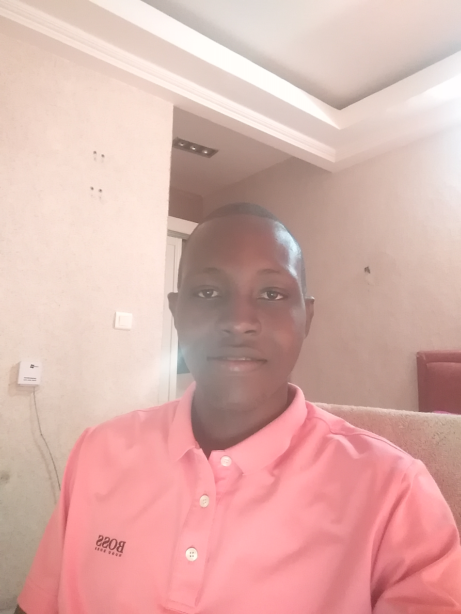

Francy Saintrick Malonga | WDD 130

I am a junior fullstack developper with 2 years of experience working now as a frontend developper in a
digital agency. I currently live in Congo Brazzaville. At the same time I am working as a frontend developper in an agency named Nanocreatives.
I know that there are many advantages in learning web design like the fact of working
as a freelancer, being an online teacher or an employee in a big company. I choosed BYU-Idaho because I do like the way they teach by getting students help each other.
I am still a bachelor who's looking for a good wife. I like the church of Jesus Christ of Latter Day Saints, I regularly attend to church seminaries even if I am not a member of the church.